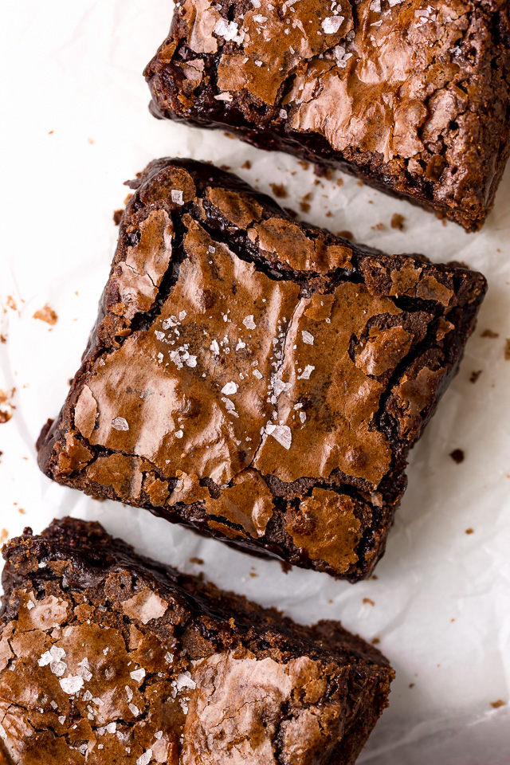

Chocolate Fudge Brownies

Description
Best chocolate fudge brownie recipe is here!
Ingredients
- 1 cup (120g) all-purpose flour
- 1/2 teaspoon baking powder
- 1/2 teaspoon salt
- 1/2 cup (43g) unsweetened cocoa powder
- 1 teaspoon espresso powder [optional, don't use if you don't like coffee]
- 3/4 cup (170g) unsalted butter
- 2 Tablespoons (28ml) oil canola, vegetable, or coconut will work
- 1 and 1/3 cups (265g) granulated sugar divided
- 2 large large eggs
- 1 large egg yolk
- 3/4 cup (128 grams) chocolate chips
Directions
- Preheat oven to 350 degrees (F) (175 degreed C). Line an 9×9-inch baking pan with parchment paper. Spray lightly with non-stick baking spray and set aside.
- In a large bowl, sift together the flour, baking powder, salt, cocoa powder, and espresso powder. Set aside until needed.
- In a medium saucepan, combine the butter, oil, and 1/3 cup of the sugar. Heat over medium heat, stirring frequently, until butter is completely melted. Remove from heat.
- In a large mixing bowl, combine the eggs and remaining sugar. Whisk until well combined, about 30 seconds.
- Slowly, pour the warm butter mixture into the egg mixture, adding it very gradually (a little bit at a time) and whisking constantly until completely combined.
- Add in the dry ingredients and chocolate chips and, using a rubber spatula, slowly stir until just combined. *Do not over mix! Stop stirring when you see the last trace of dry ingredients. Over mixing will give you cakey brownies.
- Scrape the batter into the prepared pan and smooth the top.
- Bake for 30 minutes, or until the edges are firm and the top is shiny and slightly cracked.
- Place pan on a cooling rack and cool completely before slicing.
Enjoy your delicious brownies!
Credits go to this recipe by Ashley Manila!